| Nr: | Name: | Description: |
| 0 | Built-up area | |
| 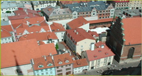
Picture: http://en.wikipedia.org/wiki/Arable_land |
This land cover class contains all built-up area (and other human fabric). It includes continuous urban fabric, discontinuous urban fabric, industrial areas, commercial areas, road and rail networks, (air)ports, mineral extraction sites, dump sites, construction sites, green urban areas, sports facilities, and leisure facilities. | |
1 |
Arable land (non-irrigated) |
|
| 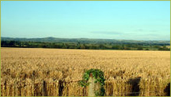
Picture: http://en.wikipedia.org/wiki/Arable_land |
This land cover class contains all agricultural land that is not pasture or permanent crops. In case biofuels are separately shown on the map they are excluded from this class. In addition, this class does not include irrigated agricultural land uses (i.e. irrigated arable land) and permanent crops. | |
2 |
Pasture |
|
| 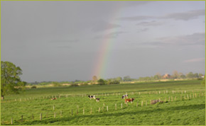
Picture: http://www.birdlifecapcampaign.org /frameset.htm |
This class contains all types of "pasture", including pastures used for the production of fodder. Included are also pastures with a lot of hedges (bocage). In principle it excludes grassland in rotation (< 5 years) which is part of arable land. | |
3 |
(semi-) Natural vegetation |
|
| 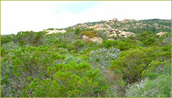
Picture: http://www.corse-sud.net/maquis/ maquis.html |
This class includes all (semi-) natural vegetation types that are non-forest with the exception of small forest patches as occurring in agricultural landscapes. This class includes natural grasslands, scrublands and regenerating forest (below 2 meters). Inland wetlands and heather/moorland are not included in this class, as they are a separate class in the CLUE-map. This class includes rangeland. | |
4 |
Inland wetlands |
|
| 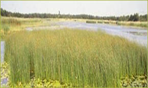
Picture: http://www.natuurmonumenten.nl |
This class covers all inland wetlands and peat bogs. Only standing waters are included in this land cover class. Flowing rivers and other water courses are included in a separate class. | |
5 |
Glaciers and snow |
|
| 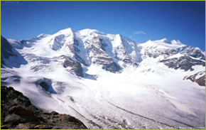
Picture: http://alps.virtualave.net/ |
This class covers all glaciers and permanent snow. | |
6 |
Irrigated arable land |
|
| 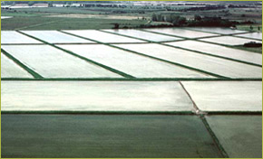
Picture: http://www.parc-camargue.fr |
This class contains all irrigated agriculture/arable land. It includes rice fields, but not greenhouses, and spray/rotary sprinklers. | |
7 |
Recently abandoned arable land |
|
| 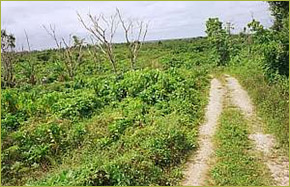 | This class contains recently abandoned arable land that is no longer used in a crop rotation. It consists of herbaceous vegetation, grasses and shrubs below 30 cm. This class naturally transgresses into the class "(semi-) natural vegetation". Most of this land cover type is still classified as arable land or permanent crops in the input data for the CLUE-map. Therefore, this class will only evolve during the simulations. | |
8 |
Permanent crops |
|
| 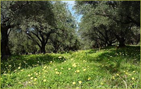
Picture: http://www.lodestarfarms.com/ |
This class contains all land cover classes that are associated with permanent crops. This class includes all kinds of agro-forestry classes, such as dehesas and montanas. | |
9 |
Arable land devoted to the cultivation of (annual) biofuel crops |
|
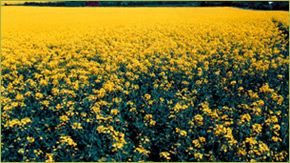
|
All arable crops that are grown with the aim to produce biofuel are include in this class. This land cover type is classified as (non-irrigated) arable land in the base map for 2000. Therefore, this class will only be indicated as a reclassification of arable land in simulations where biofuels are explicitly considered. This class does not consider perennial (i.e. second generation) crops cultivated for biofuel production. | |
10 |
Forest |
|
| 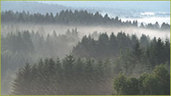
Picture: http://www.naturbilder.de/NBenglisch/html/ bavarian%20forest.html |
The forest class contains production forest, protected forest, and forest not currently harvested for other reasons. It does not include other types of natural vegetation, nor does it contain agro-forestry land cover types. | |
11 |
Sparsely vegetated areas |
|
| 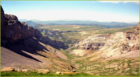 | This class contains all land cover types that are extremely sparsely vegetated. It includes bare rock, badlands, etc. | |
12 |
Beaches, dunes and sands |
|
| 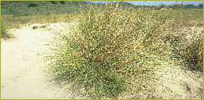
Picture: www.natuurmonumenten.nl |
This class includes land cover types such as beaches, dunes and sands in general. | |
13 |
Salines |
|
| 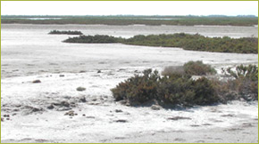
Picture: http://www.parc-camargue.fr |
This class contains salt pans, but excludes salt marshes. | |
14 |
Water and coastal flats |
|
| 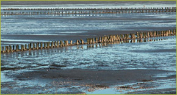
Picture: http://www.werkgroep-vlieland.nl/ tesnatura/index.html |
All water surfaces and coastal flats | |
15 |
Heather and moorlands |
|
| 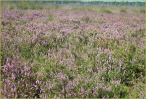 | Vegetation with low and closed cover, dominated by bushes, shrub and herbaceous plants (heather, briars, broom, gorse, laburnum). Most often succession into forest vegetation is constraint by climate or soil conditions. | |
16 |
Recently abandoned pasture land |
|
| 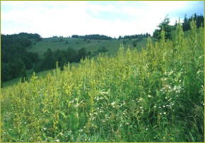 | This class contains recently abandoned pasture land. It consists of herbaceous vegetation, grasses and shrubs below 30 cm. This land cover class contains vegetation that is no longer production grassland but can not yet be considered natural grassland. It may be under very extensive grazing regime not being respected in agricultural statistics. This may include horse keeping. This class naturally transgresses into the land cover class "(semi-) natural vegetation". Most of this land cover type is still classified as pasture land in the 2000 map. Therefore, this class will only evolve during the simulations. |